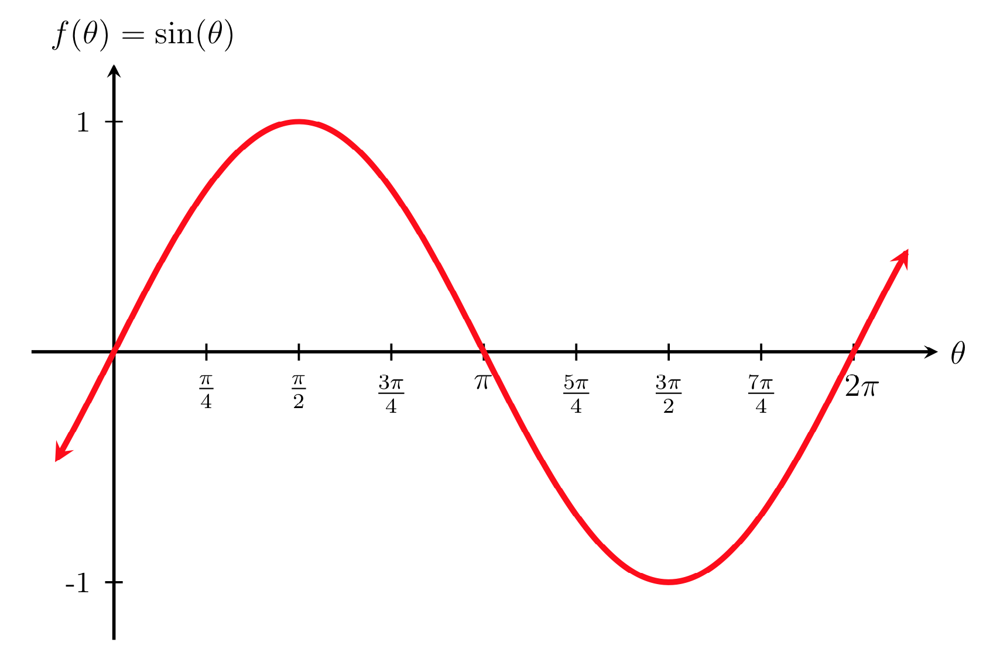

In Section , we found Cartesian coordinates of points on the unit circle corresponding to common angles. Next, we explore how these \((x,y)\) coordinates are related to periodic functions.
SubsectionThe Definition of Sine and Cosine
The Sine and Cosine Functions
Given an angle \(\theta \ \) (in either degrees or radians) and the \((x,y)\) coordinates of the corresponding point on the unit circle, we define cosine and sine as
Find \(\cos(\theta)\) and \(\sin(\theta)\) if \(\theta = \pi\text{.}\)
The special values of sine and cosine in the first quadrant are very useful to know, since knowing them allows you to quickly evaluate the sine and cosine of common angles without needing to look at a reference sheet or use your calculator. However, scenarios do come up where we need to know the sine and cosine of other angles.
To find the cosine and sine of angles that are not common angles on the unit circle, we can use a calculator or a computer.
Example26
Find \(\cos(20^\circ)\) and \(\sin(20^\circ)\text{.}\)
Since \(20^\circ\) is not a common angle on the unit circle, we need to use a calculator to find approximate values for \(\cos(20^\circ)\) and \(\sin(20^\circ)\text{.}\) Checking that our calculator is in degree mode, we get that
Remember that these values correspond to the \(x\) and \(y\) coordinates of the point on the unit circle corresponding to an angle of 20 degrees.
Caution27
Most calculators can be set into “degree” or “radian” mode, which tells the calculator the units for the input value. When you evaluate "\(\cos(20)\)" on your calculator, it will evaluate it as the cosine of 20 degrees if the calculator is in degree mode or the cosine of 20 radians if the calculator is in radian mode. Always make sure to check what mode your calculator is in when working with trigonometric functions!
Since there is no degree symbol after the number 2.5, we assume that 2.5 is in radians. Since 2.5 radians is not a common angle on the unit circle, we need to use a calculator to find approximate values for \(\cos(2.5)\) and \(\sin(2.5)\text{.}\) Checking that our calculator is in radian mode, we get that
Remember that these values correspond to the \(x\) and \(y\) coordinates of the point on the unit circle corresponding to an angle of 2.5 radians. To determine approximately where this is on the unit circle, we can find decimal approximations of a few common angles on the unit circle. Since \(\pi/2\) is approximately 1.57 and \(\pi\) is approximately 3.14, 2.5 radians is in between \(\pi/2\) radians and \(\pi\) radians. Therefore, 2.5 radians corresponds to a point on the unit circle in the second quadrant, and it makes sense that the cosine value or \(x\) coordinate is negative and the sine value or \(y\) coordinate is positive.
SubsectionRight Triangle Relationships
So far we have defined cosine and sine as the \(x\) and \(y\) coordinates of points on the unit circle. We can also state equivalent, but more general definitions of sine and cosine using a right triangle. On the right triangle, we label the hypotenuse as well as the side opposite the angle and the side adjacent (next to) the angle.
Given a right triangle with an angle of \(\theta\text{,}\) we define sine and cosine as
A common mnemonic for remembering these relationships is Soh-Cah-Toa formed by the first letters of "Sine is opposite over hypotenuse" and "Cosine is adjacent over hypotenuse." We will return to "Toa" in the next section.
Example29
Given the triangle shown below, find the value for \(\cos(\theta)\text{.}\)
When working with general right triangles, the same rules apply regardless of the orientation of the triangle. In fact, we can evaluate the sine and cosine of either of the two acute angles in any right triangle.
Example30
Using the triangle shown below, find \(\cos(\alpha)\text{,}\) \(\sin(\alpha)\text{,}\) \(\cos(\beta)\text{,}\) and \(\sin(\beta)\text{.}\)
Before solving for the cosine and sine values of \(\alpha\) and \(\beta\text{,}\) we must first find the length of the hypotenuse. Using the Pythagorean theorem, we get that
A right triangle is drawn with angle \(\alpha\) opposite a side with length 33 and angle \(\beta\) opposite a side with length 56. Find the sine and cosine of \(\alpha\) and \(\beta\text{.}\)
We have now discussed two different ways to define the sine and cosine values of an angle. By revisiting our first definition, which uses the unit circle, and comparing this to the second definition, which uses right triangle relationships, we can prove that these two definitions are equivalent.
We first defined cosine and sine as the \(x\) and \(y\) coordinates of a point on the unit circle. If we use that point to make a right triangle, as shown below, the radius of the unit circle corresponds to the hypotenuse of the right triangle and the \(x\) and \(y\) coordinates correspond to the legs of the right triangle.
Using our right triangle relationships, we get that
Since the radius of the unit circle is 1, these simplify to
\begin{equation*}
\cos(\theta) = \frac{x}{r} = \frac{x}{1} = x \hspace{.3in} \text{and} \hspace{.3in} \sin(\theta) = \frac{y}{r} = \frac{y}{1} = y
\end{equation*}
SubsectionThe Pythagorean Identity
The relationship between right triangles and trigonometric functions of angles on the unit circle can also be used to derive a new identity. Consider the same right triangle we used above.
By using the Pythagorean Theorem and the definitions of cosine and sine, we can establish a new identity. We start by relating the sides of the right triangle shown above using the Pythagorean Theorem.
\begin{align*}
x^2+y^2 \amp= r^2 \amp\amp \text{Substituting in } r=1 \\
\\
x^2+y^2 \amp= 1^2 \amp\amp \text{Substituting in } x=\cos(\theta) \text{ and } y=\sin(\theta) \\
\\
(\cos(\theta))^2+(\sin(\theta))^2 \amp= 1^2 \amp\amp \text{Simplifying and using shorthand notation } \\
\\
\cos^2(\theta) + \sin^2(\theta) \amp= 1
\end{align*}
This result is known as the Pythagorean Identity.
Note32
As shown above, \(\cos^2(\theta)\) and \(\sin^2(\theta)\) are commonly used shorthand notations for \((\cos(\theta))^2\) and \((\sin(\theta))^2\text{.}\) Be aware that some calculators and computers may not understand the shorthand notation.
The Pythagorean Identity can help us to find a cosine value of an angle if we know the sine value of that angle or vice versa. However, solving the equation will yield two possible values, so we will need to utilize additional knowledge of the angle to help us find the desired value.
Example33
If \(\displaystyle \sin(\theta)=\frac{3}{7}\) and \(\theta\) is in the second quadrant, find \(\cos(\theta)\text{.}\)
Since \(\theta\) is in the second quadrant, we know the \(x\) value of the corresponding point on the unit circle is negative. Therefore, the cosine value should also be negative. Using this additional information, we can conclude that
Since sine and cosine are functions, we can create tables of input and output values and use them to sketch the graphs of these functions.
Consider the function \(f(\theta)=\sin(\theta)\text{.}\) Below is a table showing input values of \(\theta\) and the corresponding output values of \(\sin(\theta)\text{.}\) Note that for each angle, we use the \(y\) value of the corresponding point on the unit circle to determine the output value of the sine function.
Using this table, we can sketch the graph of \(f(\theta)=\sin(\theta)\) as shown below. Recall that the horizontal axis of the graph corresponds to the input variable and the vertical axis corresponds to the output. Plotting more points gives the full shape of the sine function.

Notice how the sine values are positive between 0 and \(\pi\text{,}\) which correspond to the values of sine in quadrants 1 and 2. Since the \(y\) values in quadrants 1 and 2 are positive, the sine values between 0 and \(\pi\) are positive. Also notice that the sine values are negative between \(\pi\) and \(2\pi\text{.}\) These values correspond to the \(y\) values in quadrants 3 and 4, which are negative.
Now consider the function \(g(\theta)=\cos(\theta)\text{.}\) Below is a table showing input values of \(\theta\) and output values of \(\cos(\theta)\text{.}\) Note that for each angle, we use the \(x\) value of the point on the unit circle to determine the output value of the cosine function.
Using this table, we can sketch a graph of \(g(\theta)=\cos(\theta)\) as shown below. Plotting more points gives the full shape of the cosine function.
Like the sine function we can track the value of the cosine function through the four quadrants of the unit circle as we sketch it on the graph. Since cosine corresponds to the \(x\) coordinates of points on the unit circle, the values of cosine are positive in quadrants 1 and 4 and negative in quadrants 2 and 3.
Like the sine function we can track the value of the cosine function through the four quadrants of the unit circle as we sketch it on the graph. Since cosine corresponds to the \(x\) coordinates of points on the unit circle, the values of cosine are positive in quadrants 1 and 4 and negative in quadrants 2 and 3.
The applet below shows how the graphs of sine and cosine relate to the \(x\) and \(y\) coordinates of the point \(P\) on the unit circle. Move the slider to change the angle \(\theta\) and observe how the \(x\) and \(y\) values of point \(P\) relate to the outputs of \(\cos(\theta)\) and \(\sin(\theta)\text{.}\)
Figure34How the Graphs of Sine and Cosine Relate to the Unit Circle